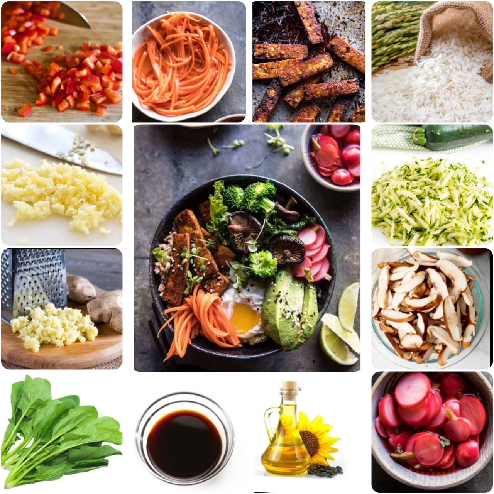

Tofu Bibimbap
Home
Bibimbap (literally "mixed rice"), sometimes romanized as bi bim bap or bi bim bop, is a Korean rice dish. The term "bibim" means "mixing" and "bap" refers to cooked rice. Bibimbap is served as a bowl of warm white rice topped with namul (sautéed and seasoned vegetables) or kimchi (traditional fermented vegetables) and gochujang (chili pepper paste), soy sauce, or doenjang (a fermented soybean paste). A raw or fried egg and sliced meat (usually beef) are common additions. The hot dish is stirred together thoroughly just before eating.
Ingredients
4 servings cooked rice
1 medium zucchini
5 ounces baby kale
2 medium carrots
10 mushroom caps crimini
8 ounces tofu
1 teaspoon minced garlic
sesame oil
cooking oil
2 tablespoons gochujang
2 tablespoons apple cider
maesilcheong
1 tablespoon water

Nutrition Facts
Calories 761.3
Total Fat 2.0g
Cholesterol 0mg
Sodium 20mg
Total Carbohydrate 84.7g
Vitamin C 24%
vitamin A 32%
Procedure
Cook the rice in a rice cooker or following package directions, using a little less water than called for. Rice for bibimbap should be slightly drier than usual for best results.
Cut the zucchini into match sticks. Sprinkle with 1/2 teaspoon of salt, and let sit for 10 to 15 minutes. Squeeze out the liquid. Heat a pan with a little bit of oil. Add the zucchini and 1/2 teaspoon minced garlic. Sauté for 2 - 3 minutes over medium high heat. Stir in 1 teaspoon sesame oil.
Blanch the baby kale briefly in salted boiling water. Drain quickly, and shock in cold water. Drain again, and squeeze out the water. Toss with 1/2 teaspoon garlic, 1/2 teaspoon sesame oil, and salt and pepper to taste.
Cut the carrots into match sticks. Heat the pan again with a little bit of oil. Sauté the carrots for 1 - 2 minutes over medium high heat until slightly softened. Sprinkle with salt and pepper to taste.
Remove the stems off the mushrooms and cut into 1/4-inch thin slices. Sauté in the lightly oiled pan for 2 - 3 minutes over medium high heat.
Cut the tofu into about 3/4-inch cubes, and lightly sprinkle with salt. Heat the pan with a tablespoon of oil, and pan-fry the tofu until all sides are lightly golden.
Place a serving of rice in a bowl. Nicely arrange a small amount of each prepared vegetable over the rice and top with a few tofu pieces. Drizzle a little sesame oil over. Serve with the red pepper paste sauce.
Expert Guide
Back ←
Scroll to Top ↑